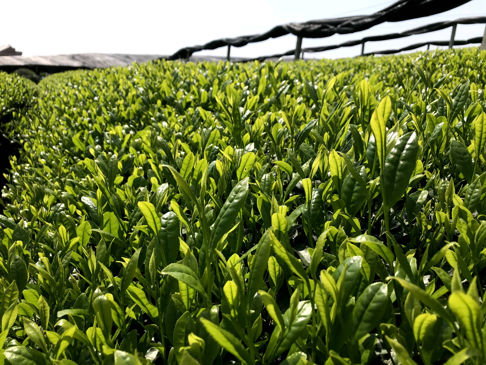
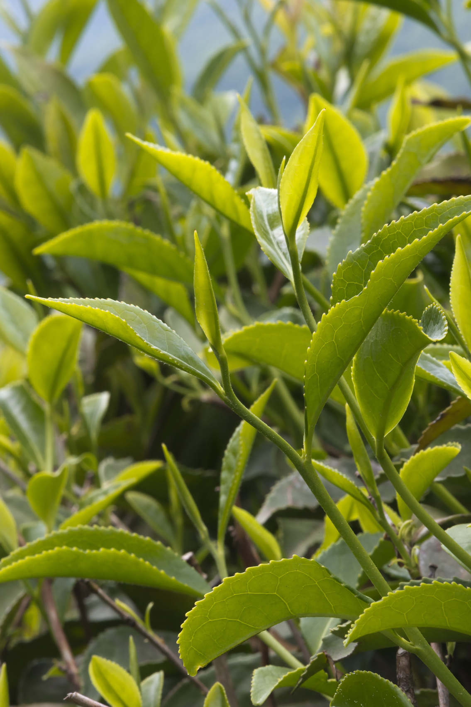
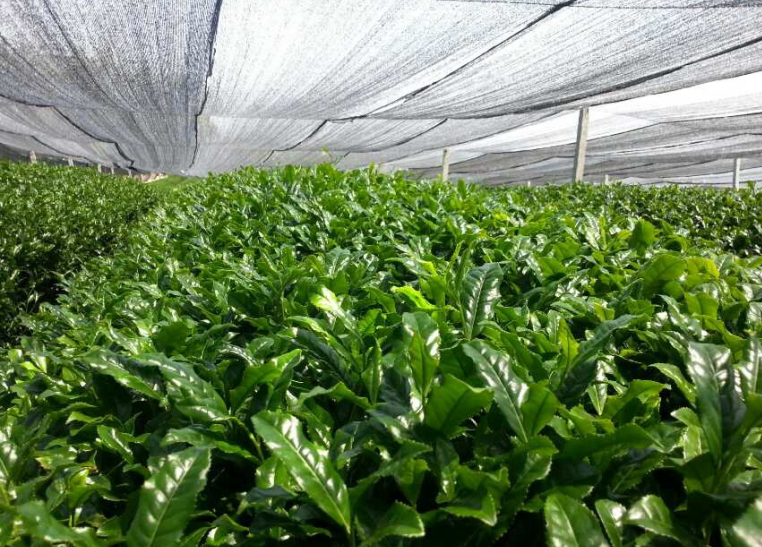
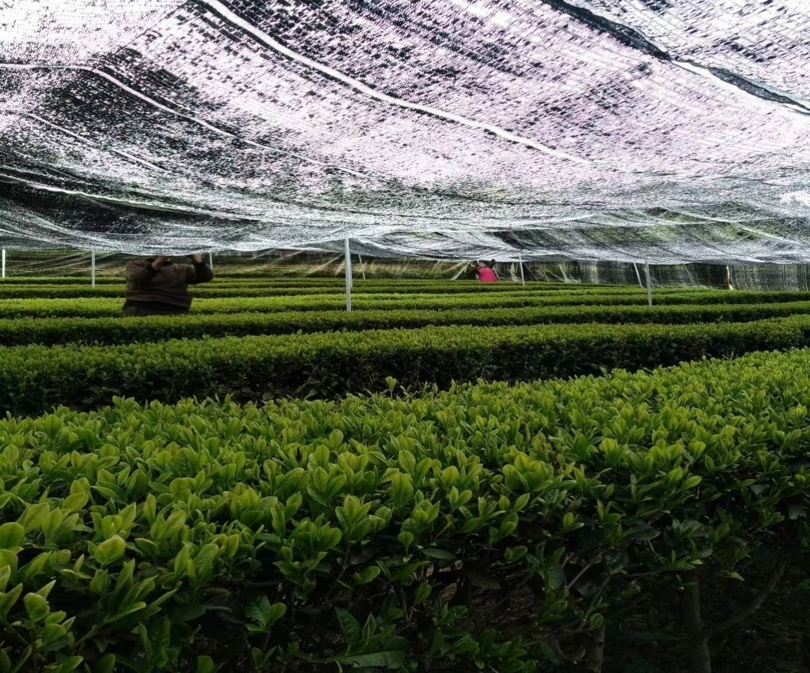

Ceremonial · Guyun 古韵
£42 / 30g tin
Our highest grade. First-flush leaves from 20-day shaded gardens, stone-ground for 1 hour per 40g. Vivid jade, silky foam, a long, sweet finish.
Changxing · Zhejiang · since the Tang Dynasty
Stone-ground, shade-grown, ceremonially crafted — authentic Chinese matcha from the hills where tea was first written about, brought home to Europe.
Explore our matcha
Our founder
My name is Wenying Cao. I grew up in Changxing, a small county in Zhejiang whose name means "long-term prosperity," before moving to the Netherlands for university and later calling London home.
Across cafés in Europe I watched matcha rise — and heard barista after barista tell me matcha was Japanese. I stayed quiet. But I knew: about 800 years ago, during the Tang and Song dynasties, the craft of matcha travelled from China to Japan. The earliest imperial tribute tea of the Tang came from my own hometown, where the tea master Lu Yu wrote The Classic of Tea at the Great Tang Tribute Tea Courtyard.
Together with childhood friends whose family has supplied raw matcha to Japan and to Starbucks China for years, I'm bringing the finest authentic Chinese matcha to the UK and Europe — with the same shade-grown leaf, stone mills, and quiet care that have shaped it for centuries.
— Wenying
Our matcha
Each grade is crafted from the same shade-grown gardens, harvested in the cool of early spring, steamed, de-stemmed, and slowly ground on granite mills.

£42 / 30g tin
Our highest grade. First-flush leaves from 20-day shaded gardens, stone-ground for 1 hour per 40g. Vivid jade, silky foam, a long, sweet finish.

£28 / 30g tin
A daily ceremonial-grade matcha with balanced umami and a clean, grassy sweetness. Shade-grown 14 days, stone-milled the same week it's picked.

£18 / 50g pouch
Built for milk. Bolder, brighter, and still stone-ground — holds its colour and character under steamed oat, almond, or whole milk.

£14 / 100g pouch
For pastry kitchens and bakers. Deep, toasty, and forgiving in the oven — ideal for cakes, ice cream, and ganache.
Hover or tap any tin to look closer.
Across the hills of Wuyi and Changxing, Zhejiang — cool, misted, planted with early, mid, and late cultivars.
Tencha is milled on granite wheels at low temperature, preserving the leaf's colour, amino acids, and aroma.
Our supplier has been crafting tea since 2000 — a designated matcha source for Starbucks China and a long-standing exporter to Japan.
Wholesale & inquiries
We're currently accepting inquiries from cafés, roasters, pâtisseries, and individuals in the UK and Europe. Tell us a little about what you're looking for — we'll reply personally within two business days.
hello@wenyingmatcha.comBased in London · Sourced from Changxing & Wuyi, Zhejiang, China